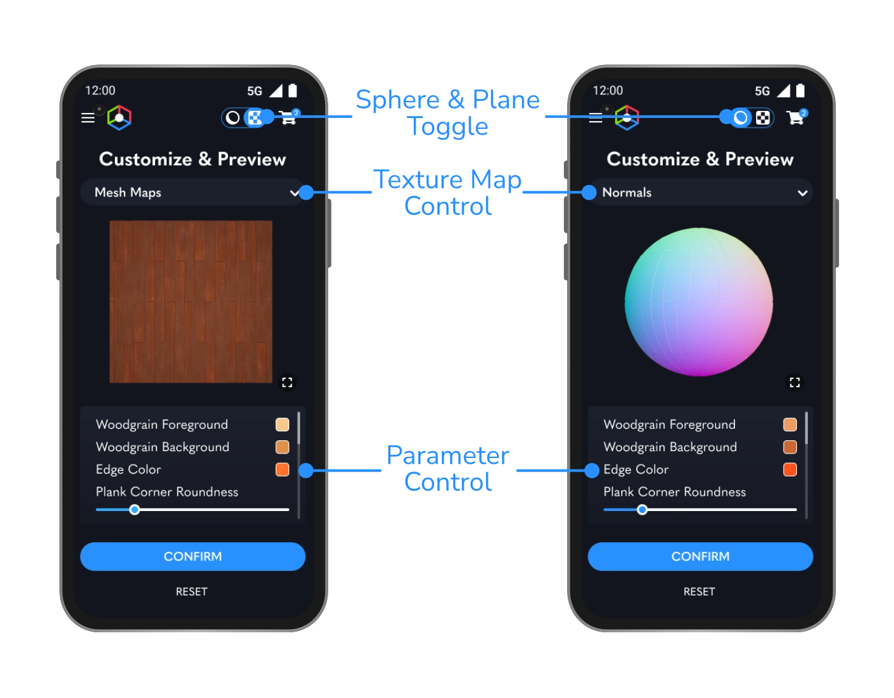
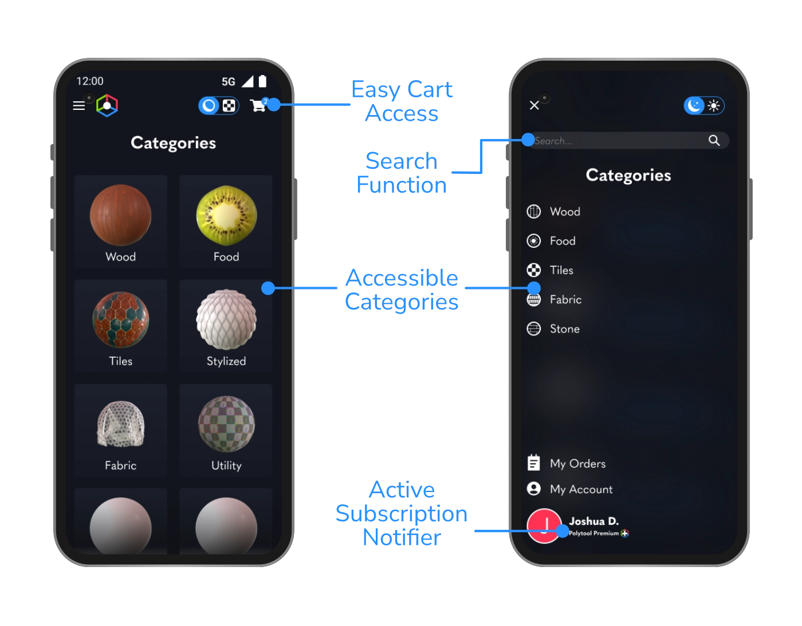
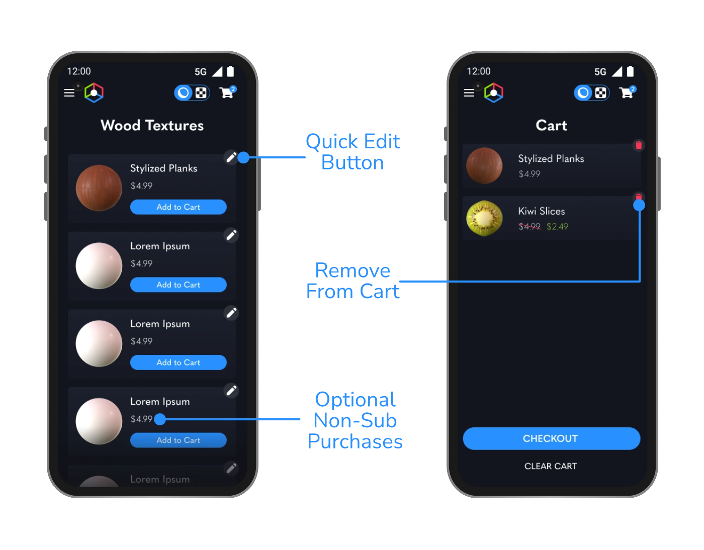

Info:
Client: Academic
Type: UI/UX & User Research
Tools Used:
SetupXR
The main objective of SetupXR is to address the issue of limited leg mobility and lack of accessibility within existing Virtual Reality applications. The goal is to create a UI/UX solution that is easy to use and enables disabled individuals to set up alternate means of achieving room-scale functionality (i.e., crouching, walking, and standing) within VR. One of the communication objectives of this project is to encourage discussions about accessibility in the relatively new space of Virtual Reality. There is a need to change the current perception of accessibility within the VR space and raise awareness of the issue. Many corporations are ignoring this issue, leaving disabled individuals unable to participate. Additionally, an outcome of this project is to create a succinct and user-friendly UI/UX design that allows users with limited leg mobility to feel excited and relieved to finally be able to use room-scale interactions within VR. The goal is to bridge the gap between those with limited mobility and those without, making VR more accessible to all.
 The webapp can be accessed here.
The figma prototype can be accessed here.
The webapp can be accessed here.
The figma prototype can be accessed here.
Problem Statement
Personas Spectrum & Personas
Using Microsoft’s inclusive design framework, three main categories of users were determined. Those with permanent, temporary and situational disabilities. The following personas each represent one category within the persona spectrum.


Combined Goals
- Faster texturing workflow
- Cheap, inexpensive solution
- Clean, easy to use interface
- A large library of assets
- The ability to easily customize textures
Scenario
Lucy is on a time crunch to find stylized textures for her upcoming video game. However, most outlets are either too expensive or dont feature enough customizability for her needs. She doesn't want to spend any time editing them in photo manipulation software, and would rather buy one that's ready.
Empathy Map
Prospective emotions of users based on possible use cases for the application. Designed as a remedy to those who don't have enough time to learn procedural texturing or just want high quality scalable textures at any point in their process. The app would have to be easy to approach, inexpensive and highly customizable to meet a wide swathe of workflows.
Customization is key
The end-user can toggle between light and dark mode, as well as spherical and plane display modes. This will ensure that no matter what the texture looks like, they will be able to preview it with proper contrast and brightness. The parameter controls are exposed values from Substance Designer at the discretion of the texture artist. This allows users to adjust these values on the fly without needing to learn a new application like Substance Designer. Since these parameters can be any value from Substance Designer, the potential use cases are limited only by the texture artist’s imagination. Keeping this process abstract and easy to approach was the main goal of this project.
Categorical
Items on the website are sorted categorically, allowing users to find what they’re looking for quickly. There is also a search function in the sidebar, for power users who know exactly what they’re looking for.
Subscription Optional
Users are able to choose whether they would prefer to pay for each texture individually, or have access to the entire library on a subscription basis. This gives power to those who would rather a one-time payment and permanent download access to the file they paid for.
Reflection
This project was born from a desire to merge both my passions for UI/UX Design and 3D Design into one cohesive concept. All of the materials shown here were created by myself in Substance Designer, and served as a platform for me to show some of the work that I’ve been doing in that field. I’ve reached out to industry professionals to get opinions and critiques on how they would like an app centered around this to function, and by that merit it was a great learning exercise for both skillsets.
Another work page focusing on my 3D Textures can be found here.